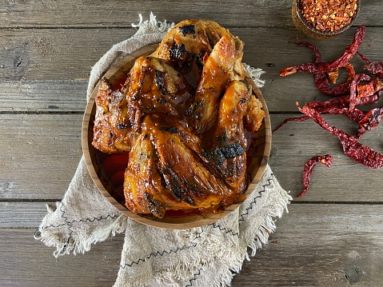

Ingredients
- 800 g chicken pieces, preferably thighs and drum sticks with skin on
- 3 whole fresh peri peri peppers (African Bird’s Eye chilli, or Thai chilli)
- 3 large cloves of garlic
- 1/2 fresh lemon, juiced
- 2 quarters of Moroccan preserved lemons, including peel OR zest and juice of 1 fresh lemon plus some salt
- 1 heaped teaspoon of paprika
- 2 tablespoons of olive oil
Recipe Instructions
- Heat oven to 200 C, or light the grill if you are grilling.
Beware that the grill must not be too hot if you are grilling chicken,
is it will burn on the outside but remain uncooked on the inside.
Chicken is best grilled for a fairly long time over medium heat.
-
Combine chilli peppers, garlic, lemon juice, preserved lemons (or alternative),
paprika and olive oil in a mixer and mix to a smooth paste.
Preserved lemons are salty, so only add extra salt if you use fresh lemon instead.
-
Marinate the chicken pieces in the peri peri paste (this is easiest done in a sealable
plastic bag, which allows you to make sure the pieces are coated all around).
Set to rest in the fridge for at least one hour.
-
Bake the chicken for 40 minutes in the oven, switching to the grill function for the
last 5 minutes or so if you think it’s needed for colour and crispiness. Alternatively,
grill the chicken pieces for about 15 minutes on each on a medium hot braai.